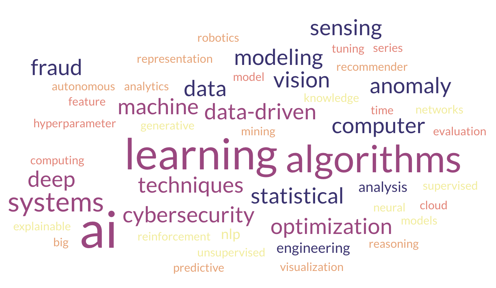

Research
My research is centered on developing innovative machine learning techniques and their applications to solve real-world challenges. I explore novel algorithms and techniques, with a commitment to pushing the boundaries of machine learning research. My work has been recognized through numerous patents and publications. My work encompasses both theoretical advancements and the development of applied solutions.
I am particularly interested in the following areas:
- AI Algorithms
- Machine Learning
- Deep Learning
- Optimization Techniques
- Data-Driven Systems
- Cybersecurity and Fraud Detection
- Anomaly Detection
- Statistical Modeling
- Computer Vision
- Natural Language Processing
- Sensing